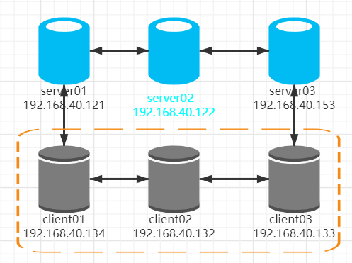

Consul集群部署
一、环境规划
- 软件版本
| 软件 | 版本 |
|---|---|
| centos | 7.9 |
| consul | v1.9.3 |
| keepalived | v1.3.5 |
- 机器规划
| 角色 | ip | 组件 |
|---|---|---|
| server01 | 192.168.40.121 | consul |
| server02 | 192.168.40.122 | consul |
| server03 | 192.168.40.153 | consul |
| client01(主) | 192.168.40.134 | consul clinet |
| client02(备) | 192.168.40.132 | consul clinet |
| client03(备) | 192.168.40.133 | consul clinet |
网络拓扑图：

二、安装consul
下载解压 软件下载：https://releases.hashicorp.com/consul/1.9.3/consul_1.9.3_linux_amd64.zip
wget --no-check-certificate https://releases.hashicorp.com/consul/1.9.3/consul_1.9.3_linux_amd64.zip
unzip consul_1.9.3_linux_amd64.zip
mkdir -p /opt/consul/{bin,log,conf,data}
mv consul /opt/consul/bin
配置环境变量
cat >> ~/.bash_profile << EOF
export CONSUL_HOME=/opt/consul
export PATH=\${PATH}:\${CONSUL_HOME}/bin
EOF
source ~/.bash_profile
Consul命令 生成一个唯一的mark
consul keygen
EXz7LFN8hpQ4id8EDYiFoQ==
三、配置Consul的Server配置文件
三个server之间会选举出一个server-leader 192.168.40.121
cat /opt/consul/conf/server.json
{
"bind_addr": "0.0.0.0",
"client_addr": "0.0.0.0",
"datacenter": "dc1",
"data_dir": "/opt/consul/data",
"encrypt": "EXz7LFN8hpQ4id8EDYiFoQ==",
"log_level": "INFO",
"log_file": "/opt/consul/log/consul.log",
"log_rotate_duration": "24h",
"enable_syslog": false,
"enable_debug": true,
"node_name": "192.168.40.121",
"server": true,
"ui": true,
"bootstrap_expect": 3,
"retry_join": [
"192.168.40.121",
"192.168.40.122",
"192.168.40.153"
]
}
-
"bind_addr": "0.0.0.0" 作用：指明节点的IP地址,这是Consul侦听的地址，它必须可以被集群中的所有其他节点访问，写server所在服务器的内网IP或者0.0.0.0,
-
"client_addr": "0.0.0.0" 作用：指定节点为client，指定客户端接口的绑定地址,默认是127.0.0.1，只允许回环接口访问,写server所在服务器的内网IP或者0.0.0.0
-
"datacenter": "dc1" 作用：指定机器加入到哪一个数据中心中
-
"data_dir": "/opt/consul/data" 作用：指定agent储存状态的数据目录，这是所有agent都必须的,对server尤其重要，因为他们必须持久化集群的状态
-
"encrypt": "EXz7LFN8hpQ4id8EDYiFoQ==" 作用：此处配置的加密字符串所有节点必须统一，否则通讯会异常
-
"node_name": "192.168.40.134" 作用：指定节点在集群中的名称，该名称在集群中必须是唯一的（默认这是机器的主机名），直接采用机器的IP
-
"log_file": "/opt/consul/log/consul.log" 配置日志文件与目录
-
"log_rotate_duration": "24h" 设置日志轮转
-
"enable_syslog": false, 禁止consul日志写入系统日志
-
"server": true 定义agent运行在server模式，每个数据中心（DC）的server数推荐3-5个。
-
"ui": true 是否开启图形化界面
-
"bootstrap_expect": 3 作用： 参数表明该服务运行时最低开始进行选举的节点数，当设置为1时，则意味允许节点为一个时也进行选举；当设置为3时，则等到3台节点同时运行consul并加入到server才能参与选举，选举完集群才能够正常工作。 一般建议服务器结点3-5个。
192.168.40.122 cat /opt/consul/conf/server.json
{
"bind_addr": "0.0.0.0",
"client_addr": "0.0.0.0",
"datacenter": "dc1",
"data_dir": "/opt/consul/data",
"encrypt": "EXz7LFN8hpQ4id8EDYiFoQ==",
"log_level": "INFO",
"log_file": "/opt/consul/log/consul.log",
"log_rotate_duration": "24h",
"enable_syslog": false,
"enable_debug": true,
"node_name": "192.168.40.122",
"server": true,
"ui": true,
"bootstrap_expect": 3,
"retry_join": [
"192.168.40.121",
"192.168.40.122",
"192.168.40.153"
]
}
192.168.40.153 cat /opt/consul/conf/server.json
{
"bind_addr": "0.0.0.0",
"client_addr": "0.0.0.0",
"datacenter": "dc1",
"data_dir": "/opt/consul/data",
"encrypt": "EXz7LFN8hpQ4id8EDYiFoQ==",
"log_level": "INFO",
"log_file": "/opt/consul/log/consul.log",
"log_rotate_duration": "24h",
"enable_syslog": false,
"enable_debug": true,
"node_name": "192.168.40.153",
"server": true,
"ui": true,
"bootstrap_expect": 3,
"retry_join": [
"192.168.40.121",
"192.168.40.122",
"192.168.40.153"
]
}
注意事项：
- 1、bind_addr和client_addr改为0.0.0.0
- 2、datacenter为dc1
- 3、data_dir和log_file路径要指对
- 4、node_name要唯一，这里以IP命名
- 5、server: true 表示开启server模式，bootstrap_expect 有几个server 这里数值就为几
四、配置Consul的client配置文件
192.168.40.134 cat /opt/consul/conf/client.json
{
"bind_addr": "0.0.0.0",
"client_addr": "0.0.0.0",
"datacenter": "dc1",
"data_dir": "/opt/consul/data",
"encrypt": "EXz7LFN8hpQ4id8EDYiFoQ==",
"log_level": "INFO",
"log_file": "/opt/consul/log/consul.log",
"log_rotate_duration": "24h",
"enable_syslog": false,
"enable_debug": true,
"node_name": "192.168.40.134",
"ui": true,
"server": false,
"retry_join": [
"192.168.40.121",
"192.168.40.122",
"192.168.40.153"
]
}
192.168.40.132 cat /opt/consul/conf/client.json
{
"bind_addr": "192.168.40.132",
"client_addr": "0.0.0.0",
"datacenter": "dc1",
"data_dir": "/opt/consul/data",
"encrypt": "EXz7LFN8hpQ4id8EDYiFoQ==",
"log_level": "INFO",
"log_file": "/opt/consul/log/consul.log",
"log_rotate_duration": "24h",
"enable_syslog": false,
"enable_debug": true,
"node_name": "192.168.40.132",
"ui": true,
"server": false,
"retry_join": [
"192.168.40.121",
"192.168.40.122",
"192.168.40.153"
]
}
192.168.40.133 cat /opt/consul/conf/client.json
{
"bind_addr": "192.168.40.133",
"client_addr": "0.0.0.0",
"datacenter": "dc1",
"data_dir": "/opt/consul/data",
"encrypt": "EXz7LFN8hpQ4id8EDYiFoQ==",
"log_level": "INFO",
"log_file": "/opt/consul/log/consul.log",
"log_rotate_duration": "24h",
"enable_syslog": false,
"enable_debug": true,
"node_name": "192.168.40.133",
"ui": true,
"server": false,
"retry_join": [
"192.168.40.121",
"192.168.40.122",
"192.168.40.153"
]
}
注意事项：
- 1、把 "server": 的值改为false，表示为client节点
- 2、bind_addr最好还是指定0.0.0.0，如果启动报错，就指定一个ip地址吧，如果指定IP地址,访问members的话，那么consul members命令就需要加上 --http-addr 192.168.40.133:8500 才能查看了
五、consul启动
创建一个普通用户来对consul服务进行管理：
useradd consul
更改consul服务目录属主：
chown -R consul.consul /opt/consul
命令启动
consul agent -config-dir=/opt/consul/conf
通过systemd启动 需要使用ROOT权限去编写consul.service文件 cat /usr/lib/systemd/system/consul.service
[Unit]
Description=Consul-node1
Documentation=https://www.consul.io/docs/
Wants=network-online.target
After=network-online.target
[Service]
User=consul
Group=consul
Type=simple
ExecStart=/opt/consul/bin/consul agent -config-dir=/opt/consul/conf
[Install]
WantedBy=multi-user.target
- 重载systemd配置
sudo systemctl daemon-reload
- 使用systemd启动consul服务：
sudo systemctl start consul
- 使用systemd开机自启动：
sudo systemctl enable consul
- 使用systemd查看consul服务的状态：
sudo systemctl status consul
- 使用systemd停止consul服务：
sudo systemctl stop consul
- 使用systemd重启consul服务：
sudo systemctl restart consul
六、consul相关命令
- 重新加载配置文件
consul reload
- consul运行状态信息
consul info
- 查看consul lan
# consul members
Node Address Status Type Build Protocol DC Segment
192.168.40.121 192.168.40.121:8301 alive server 1.9.3 2 dc1 <all>
192.168.40.122 192.168.40.122:8301 alive server 1.9.3 2 dc1 <all>
192.168.40.153 192.168.40.153:8301 alive server 1.9.3 2 dc1 <all>
192.168.40.132 192.168.40.132:8301 alive client 1.9.3 2 dc1 <default>
192.168.40.133 192.168.40.133:8301 alive client 1.9.3 2 dc1 <default>
192.168.40.134 192.168.40.134:8301 alive client 1.9.3 2 dc1 <default>
consul members --http-addr 192.168.40.122:8500 加上--http-addr 192.168.40.122:8500表示访问的是192.168.40.122 的consul lan信息
- 查看consul运行日志
consul monitor --http-addr=192.168.40.122:8500
七、HAProxy配置
cat >> /etc/haproxy/haproxy.cfg << EOF
# listen：Frontend和Backend的组合体
listen consul_cluster_8500
# 定义监听地址和端口
bind 0.0.0.0:8500
# 配置 tcp 模式
mode tcp
# 简单的轮询
balance roundrobin
#check 后端健康检测
#inter 每隔五秒对集群做健康检查，2次正确证明服务器可用，
#2次失败证明服务器不可用，并且配置主备机制
server node1 192.168.40.132:8500 check inter 5000 rise 2 fall 2
server node2 192.168.40.133:8500 check inter 5000 rise 2 fall 2
server node3 192.168.40.134:8500 check inter 5000 rise 2 fall 2
EOF
cat >> /etc/haproxy/haproxy.cfg << EOF
# listen：Frontend和Backend的组合体
listen consul_cluster_8600
# 定义监听地址和端口
bind 0.0.0.0:8600
# 配置 tcp 模式
mode tcp
# 简单的轮询
balance roundrobin
#check 后端健康检测
#inter 每隔五秒对集群做健康检查，2次正确证明服务器可用，
#2次失败证明服务器不可用，并且配置主备机制
server node1 192.168.40.132:8600 check inter 5000 rise 2 fall 2
server node2 192.168.40.133:8600 check inter 5000 rise 2 fall 2
server node3 192.168.40.134:8600 check inter 5000 rise 2 fall 2
EOF
systemctl restart haproxy